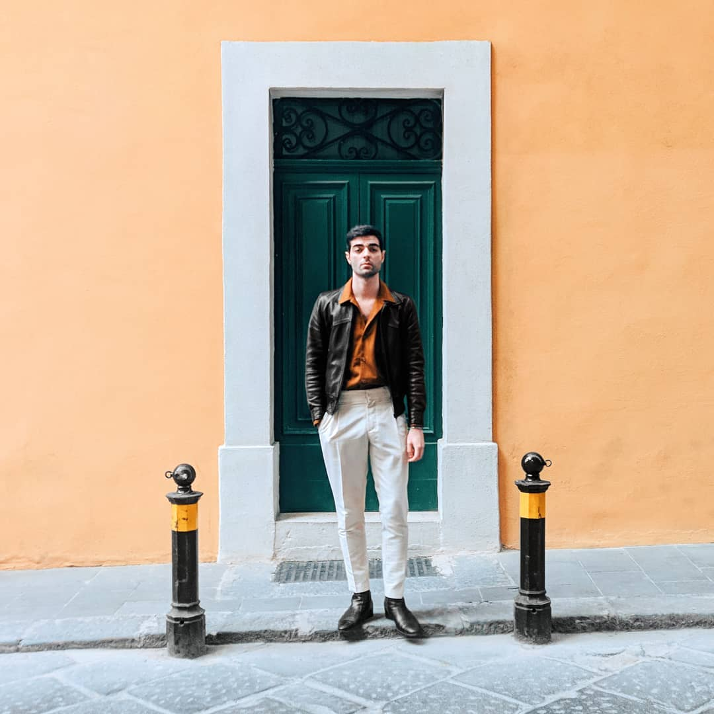
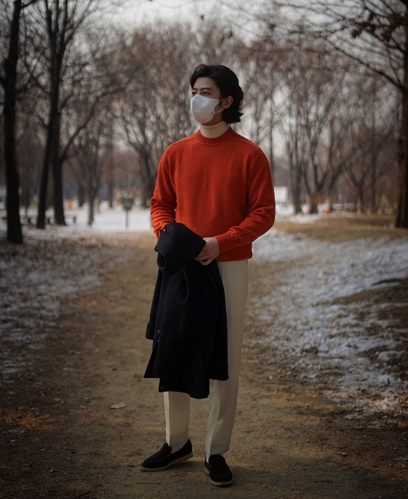

I've never been a citrus fan. Orange -- both the flavor and color -- never appealed to me as a child. But they grew on me over time. I can really enjoy a nice cold glass of orange juice or a deep orange sweater. In both cases, a little vanilla can go a long way.
The history on the Orange Creamsicle bar is a little hazy, but it seems that the trademark, if it hasn't been genericized, is owned, like Popsicle itself, by Unilever. That said, it's been used in no shortage of desserts since then, and multiple Nike sneakers.
But you should know that I'm really here to focus on the color scheme. I'll be using multiple shades of orange for this album -- burnt oranges, bright ones, and even a few more colorful tans. I'll also use multiple shades of white, off white, and cream. Sometimes the white will just be a small hint -- but I feel that everthing fits.
If you're looking for further color pairings in this palate, I'd recommend any shade of brown or tan, some greens, and possibly some blues.
The legendary Chris Grech usually does not dress cheaply, but here he is in a beautiful Uniqlo shirt (and everything else expensive as hell). https://www.instagram.com/chrisgrech/Most guys using orange place it in the fall or winter. But white is more traditionally a summer thing. Here's @sirdempseyliam wearing orange linen over white. This photo helped inspire this album! https://www.instagram.com/sirdempseyliam/
Umit Benan AW '20-'21 used this burnt orange tone with white in these big, flowy, oversized fits, and I love it.@newtonstreetvintage with orange over madras.Trucker jacket from 18 East.
Gerry Nelson layers orange nicely, with greens and blues, but isn't afraid to wear it front and center with a strong knit.I always like to throw in a couple of celebrities, so here's Kevin Durant wearing the Nike KD2 Creamsicles. I don't know why they called these sneakers creamsicles, there's no white on them, but the fit as a whoe, including the rock, fits my color scheme.The Nike Air VaporMax Plus Creamsicle is a sneaker much more deserving of the name./u/befree1231's white and patent orange Jordans with cream laces. What is it with Nike and orange?/u/partycharlie wore this for /r/malefashionadvice's Food-themed WAYWT. The food that inspired him was "cigarettes and black coffee."Jan from The Armoury. Photo credit Milad Abedi.Milad Abedi himselfYou should have known I'd include Ethan M. Wong in one of my albums.No, he's not wearing orange, but the phtoo still fits the vibe.Ethan also took this great photo of a friend of his. I love the soft textures, and it's one of relatively few using orange for the bottoms.Jacket from the Anthology, Trousers from Loro Piana, and a beautiful sweater from Johnstons of EglinJimi Williamson (@jimi_m_w) in the Anthology shaggy dog jacket.Yuri and Yuri.@iolokorea_cho in his own brand's knitwear.Alessandro Michele, Creative Director of a little-known brand by the name of "Gucci." That's an italian name, the cc makes a "ch" sound.I don't have enough orange to wear, but I did take this photo of my boy Anasha. His mane has never been cut, shaved, trimmed, or, really, tamed. Here, at Space Billiards in K-Town NYC, the reflection on his glasses just... did it for me. /u/hushorhowl posted this mmediately after I posted my album, and tagged me. He ensures me that jacket is orange, although it looks pinkish to me.An 18 East shirt sporting what can only be called hamentaschen. I'm counting it because of the white drawstring at the bottom.Rainer John of @thedressedchest in a J. Crew sweater that I'm calling burnt orange. s it a little redder now that I'm looking at it again? I'm not going to answer that.I like closing an album with Jeri. It feels right, for some reason.